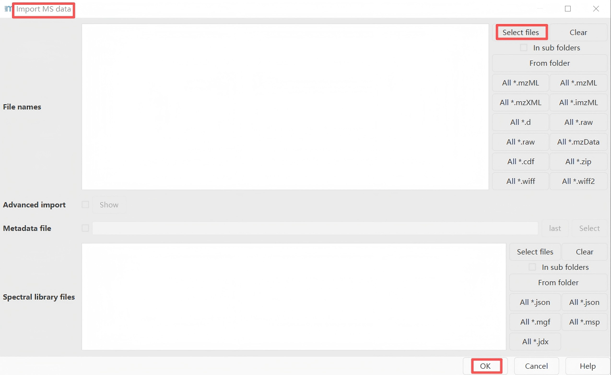
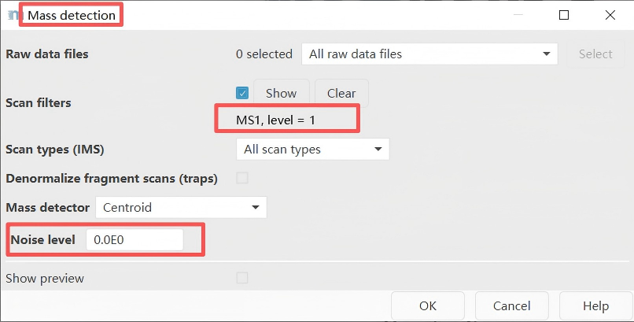
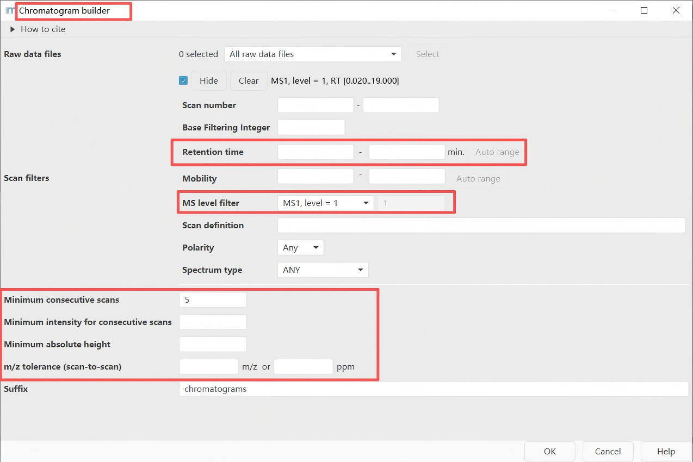
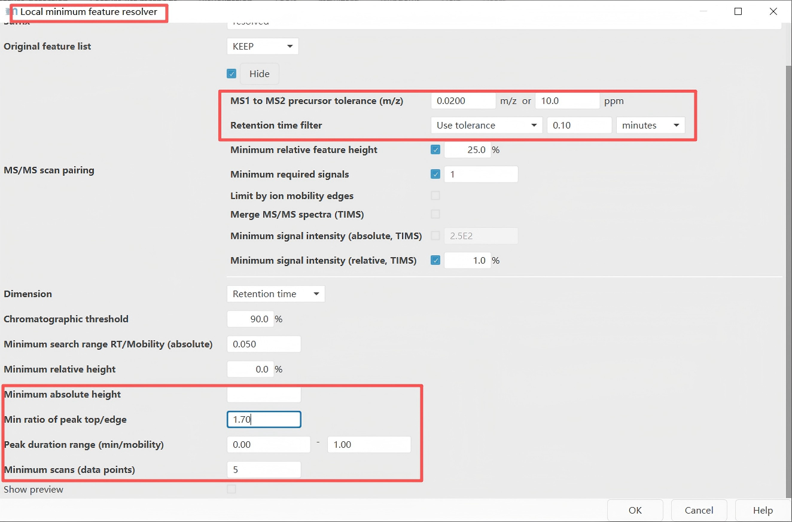
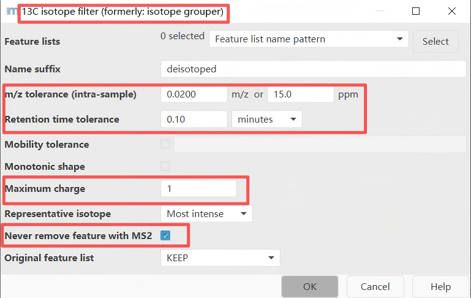
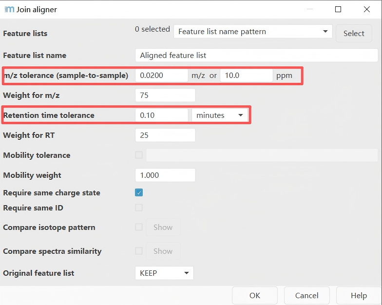
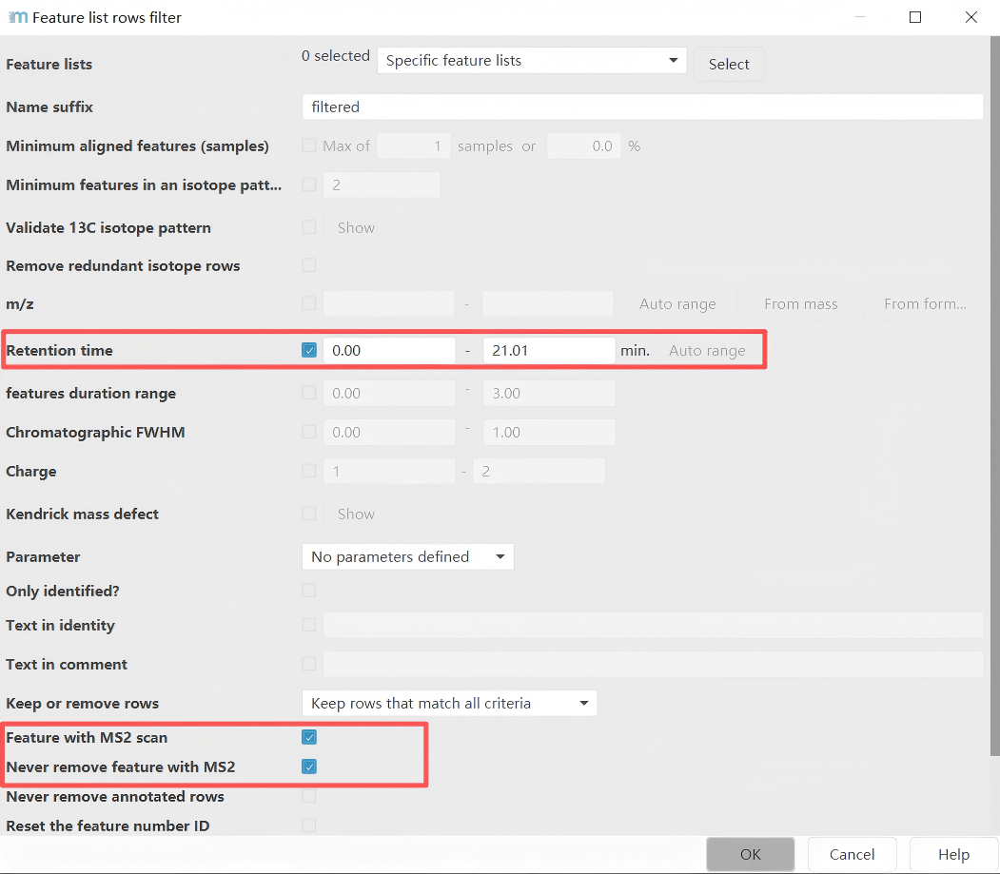
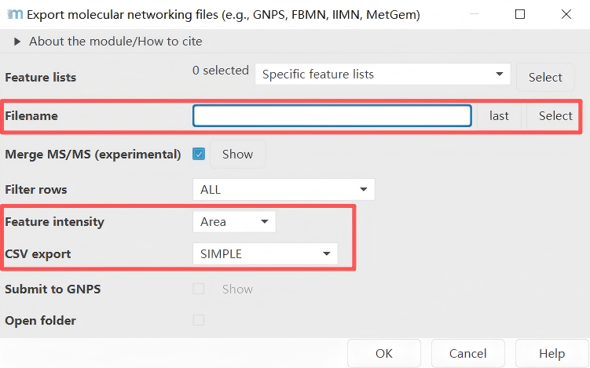

Mass spectrometry processing with MZmine
In non-targeted metabolomics research, MZmine is a powerful open-source software for processing mass spectrometry data. Below we describe how to use MZmine4 v4.3.0 with the DeepMass workflow.
Installation
Download the 4.3.0 version of MZmine software (version MZmine v4.3.0) at: https://github.com/mzmine/mzmine/releases?page=3
Data Processing with MZmine for DeepMass
In MZmine, a series of steps are required to process mass spectrometry data. Here, we will introduce the key steps needed for processing LC-MS/MS data acquired in non-targeted mode (data dependent acquisition).
Disclaimer: The parameter settings in MZmine may vary depending on the instrument used, acquisition parameters, and the samples being analyzed. The following instructions serve only as basic guidelines when using MZmine with the DeepMass workflow.
Please consult the resources below for more details on MZmine processing: The official documentation: http://mzmine.github.io/documentation.html
Convert your LC-MS/MS Data to an Open Format
MZmine supports multiple input formats. However, we recommend converting the files to mzML format before processing with MZmine 4.
Processing Steps
Below is a walk-through of all the steps required for processing LC-MS/MS data with MZmine for DeepMass.
Step 1. Import Files
Go to Menu:
Raw data methods → Import MS data → Select files
Import mzML LC-MS/MS files into MZmine.

Step 2. Mass Detection
Go to Menu:
Raw data methods → Spectra processing → Mass detection → Set filter: MS1 level or MS2 level
First, perform mass detection at the MS1 level.
Important note: Set an appropriate intensity threshold. Use the preview window to determine a threshold suitable for your data. In general, this value should be at least comparable to the minimum threshold set for triggering MS2 scan events (e.g., 1E3 for MAXIS-QTOF mode, and 1E4 for Q-Exactive mode).
Perform mass detection on MS level 2. The same mass list name must be used.
Important note: Please ensure that the set intensity threshold reflects the noise level in the MS2 spectra. Typically, this value should be lower than that for MS1 (e.g., threshold of 1E2 for maXis QTOF; 1E4 for LTQ-XL Orbitrap; and 0 for Q-Exactive). If uncertain, you can set the threshold to 0.

Step 3. Chromatogram Building
Go to Menu:
Feature detection → LC-MS → Chromatogram builder
Starting from MZmine version 2.39, the original chromatogram builder tool is no longer used and has been replaced by the ADAP chromatogram builder. The ADAP module includes parameters related to minimum group size, number of scans, and group intensity threshold. For detailed instructions on these parameters, please refer to the ADAP user guide (https://github.com/mzmine/mzmine.github.io/blob/master/ADAP_user_manual.pdf). If you use the ADAP chromatogram builder, please be sure to cite the reference below.
Myers, O.D. et al, One Step Forward for Reducing False Positive and False Negative Compound Identifications from Mass Spectrometry Metabolomics Data: New Algorithms for Constructing Extracted Ion Chromatograms and Detecting Chromatographic Peaks. Anal. Che

Key parameter:
m/z tolerance = 0.004 m/z or 15 ppm (TOF), 0.0015 m/z or 5 ppm (Orbitrap)
Step 4. Feature Resolving
Go to Menu:
Feature detection → Chromatogram resolving → Local minimum resolver
Feature deconvolution separates co-eluting and overlapping chromatographic peaks. In the chromatograms constructed in the previous step, some peaks appear as double peaks or multiple peaks, as shown in the figure below. This step splits such multi-peaks into single peaks. A commonly used tool is the Local Minimum Resolver.
Important note: Please select both options: "MS1 to MS2 precursor tolerance (m/z)" and "Retention time filter". These values need to be determined according to your experimental conditions — specifically, based on the desired MS mass accuracy and the width of the chromatographic peaks. In addition, the parameter settings for the "Minimum absolute height" and the "Minimum scans" are consistent with those used in the previous step of chromatogram building.
Example for a UHPLC colum (1.7 µm C18, 50 × 2.1 mm, flow rate of 0.5 mL/min):
maXis-QTOF: 12 min gradient, 0.02 Da and 0.15 minQ-Exactive: 5 min gradient, 0.01 Da and 0.1 min

Step 5. 13C Isotope Filter
Go to Menu:
Feature list methods → Isotopes → 13C isotope filter (formerly: isotope grouper)
Recommended parameter settings for this step:
m/z tolerance: 0.004 m/z or 15 ppm (high resolution)Retention time tolerance: 0.1 minMaximum charge: 1 or 2

Step 6. Feature Alignment
Go to Menu:
Feature list methods → Alignment → Join aligner
Integrate the features obtained from different samples to construct a feature table.
Parameter settings reference:
| Parameter | Suggested Value | Explanation |
|---|---|---|
| m/z tolerance | 0.005–0.01 m/z | Set according to instrument mass accuracy |
| RT tolerance | 0.05–0.2 min | Adjust based on chromatographic stability |
| RT correction | Enabled | Use LOESS or other methods to correct retention time drift |
| Weighting | m/z and RT | Typically give higher weight to m/z |

Step 7. Feature List Filtering
Go to Menu:
Feature list methods → Feature list filtering → Feature list rows filter
Parameter settings page: In this example, only features with a retention time in the range of 1-21.01 minutes and having MS2 information are considered.

Step 8. Export
Go to Menu:
Feature list methods → Export feature lists → GNPS-feature based molecular networking
Two files are exported as results: one is the .mgf file containing mass spectrometry information, and the other is the feature table .CSV file.

Step 9. Conclusion
Finally, we import the .mgf file exported from MZmine into DeepMass for structural annotation.
Disclaimer: All parameters shown in the figures of this instruction document are not intended as reference parameters. They need to be adjusted based on the actual instrument resolution, the chromatographic column used, the type of acquired data, and other specific conditions. This tutorial is intended to provide a general workflow for MZmine processing for DeepMass analysis, and the parameter settings described in the text are merely suggestions.